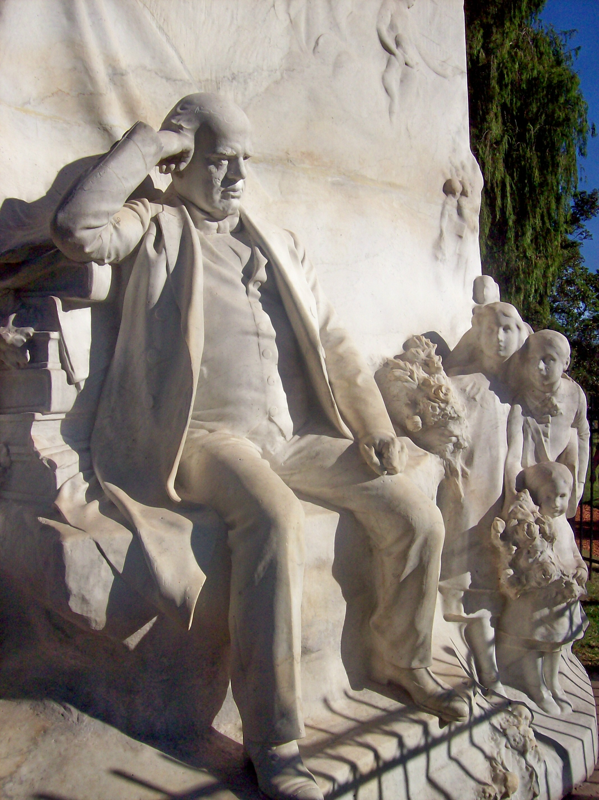

Biografia de Domingo Faustino Sarmiento

Fotografía de Sarmiento en 1874
Resumen
Domingo Faustino Sarmiento (Nacimiento: San Juan, Argentina, 15 de febrero de 1811. Fallecimiento: Asunción, Paraguay, 11 de septiembre de 1888) fue un político, escritor, docente, periodista, militar y estadista argentino; gobernador de la provincia de San Juan entre 1862 y 1864, presidente de la Nación Argentina entre 1868 y 1874, senador nacional por su provincia entre 1874 y 1879 y ministro del Interior en 1879.
Es considerado como un gran prosista castellano. Colaboró tanto en la educación pública como en el progreso científico de su país.
Biografía
Nacimiento, familia y educación
Domingo Faustino Sarmiento nació el 15 de febrero de 1811 en San Juan, Argentina, en una familia humilde. Su nombre de bautismo era Faustino Valentín Quiroga Sarmiento, pero posteriormente se le añadió el nombre "Domingo". Sus primeros maestros fueron su padre y su tío, quienes le enseñaron a leer desde temprana edad.
En 1816, ingresó a una escuela llamada "Escuelas de la Patria" y, más tarde, en 1821, se planteó la posibilidad de que cursara el seminario en Córdoba, pero no pudo debido a la falta de recursos y contactos influyentes. Desde ese momento, se convirtió en autodidacta, recibiendo ayuda de amigos y familiares en materias como matemáticas y latín.
En 1823, trabajó como asistente en la Oficina de Topografía de San Juan, y en 1825 acompañó a su tío a la provincia de San Luis, donde fundaron una escuela, marcando su inicio en la educación. Más tarde, en 1826, Sarmiento y su tío abrieron una pequeña escuela en San Francisco del Monte, San Luis, con tan solo 7 alumnos. A pesar de las limitaciones, Sarmiento continuó su educación de manera autodidacta y se dedicó a la lectura en su tiempo libre.
Retrato de Sarmiento en 1845, hecho por Benjamín Franklin Rawson
Exilios
En 1827, Domingo Faustino Sarmiento fue reclutado en el ejército federal. Se convirtió en alférez de milicia, pero tras un desacuerdo con el gobernador Manuel Quiroga, fue encarcelado. Posteriormente, se unió a la causa unitaria y al ejército comandado por José María Paz. Participó en la campaña de Cuyo y la batalla del Rodeo de Chacón en 1831.
Debido a la victoria federal en su provincia, en 1831, se exilió en Chile, donde trabajó como profesor y tuvo una hija. Luego, en 1836, contrajo fiebre tifoidea y regresó a San Juan por solicitud de su familia.
De vuelta en su ciudad natal, Sarmiento participó en actividades artísticas y políticas, oponiéndose a Juan Manuel de Rosas. Fundó el Colegio de Pensionistas de Santa Rosa y el periódico El Zonda. Sin embargo, sus críticas al gobierno federal resultaron en su arresto en 1840 y otro exilio en Chile.
En Chile, se centró en actividades culturales, escribió para varios periódicos y dirigió la Escuela Normal de Preceptores. Impulsó el romanticismo y estudió sistemas educativos en Europa y los Estados Unidos. Durante un viaje por Europa, se reunió con José de San Martín en Francia.
En 1848, Sarmiento se casó con Benita Agustina Martínez Pastoriza en Santiago de Chile, adoptando al hijo de su amigo Domingo Castro y Calvo. Regresó a Argentina en 1851 y se unió al Ejército Grande del general Justo José de Urquiza.
Sarmiento durante su carrera militar (Sin fecha)
Carrera política
Domingo Faustino Sarmiento comenzó su carrera política en 1851 como gacetillero en el ejército de Justo José de Urquiza hasta la batalla de Caseros. Tras la caída de Juan Manuel de Rosas, se instaló en Buenos Aires pero tuvo conflictos con Urquiza y regresó a Chile. Durante este tiempo, tuvo discusiones políticas con Juan Bautista Alberdi, aunque compartían ideales liberales. Ambos contribuyeron a la Constitución argentina de 1853, marcando el inicio de la era constitucional en Argentina.
En 1855 trabajó en el diario El Nacional y como miembro consultivo en la provincia de Buenos Aires. Fue concejal municipal de Buenos Aires en 1856 y posteriormente senador en 1857 y 1860. También desempeñó un papel importante en el ámbito educativo.
En 1860, durante el gobierno de Bartolomé Mitre, Sarmiento fue nombrado Ministro de Gobierno. Después de la batalla de Pavón, participó en la campaña a Cuyo y se convirtió en gobernador de San Juan en 1862, apoyando la persecución de los federales locales. Más tarde, renunció a la gobernación y realizó misiones diplomáticas en Chile, Perú y los Estados Unidos, donde escribió libros sobre política y educación. Desde el extranjero, rechazó cargos como senador nacional por San Juan y ministro del Interior en el gobierno de Mitre.

Sarmiento en 1867, París, Francia
Gobernador de la provincia de San Juan
Domingo Faustino Sarmiento asumió el poder en San Juan en 1862 como enviado del presidente Bartolomé Mitre. Se encontró con una provincia empobrecida y dividida y se dedicó a ordenar las finanzas y promover el progreso. En dos años, transformó la provincia con obras públicas, incluyendo alumbrado, empedrado, apertura de calles y forestación.
En el ámbito educativo, promovió la educación pública, gratuita y obligatoria, abriendo nuevas escuelas y creando instituciones educativas. También se centró en el desarrollo económico al fomentar la explotación minera y establecer leyes impositivas. Además, promovió la colonización y el desarrollo agrícola con inmigrantes.
A pesar de sus esfuerzos, enfrentó la oposición interna y la muerte del caudillo Chacho Peñaloza. La falta de apoyo local lo llevó a renunciar al gobierno en 1864, lo que impidió la realización completa de sus proyectos.

Retrato esculpido de Sarmiento, San Juan
Presidencia de la Nación Argentina
Domingo Faustino Sarmiento fue elegido presidente de Argentina en 1868, asumiendo el cargo el 12 de octubre. Su presidencia fue la segunda de las presidencias históricas del país, con el objetivo de lograr "nación, constitución y libertad". Esto implicaba la unión de las provincias, establecer una constitución y promover los principios del liberalismo. Poco después de su asunción, el Congreso aprobó un presupuesto para el próximo año, un crédito para la Guerra del Paraguay y aumentó los derechos aduaneros.
Monumento de Sarmiento en Lima, Perú
El Legado de Sarmiento: Educación, Infraestructura y Relaciones Exteriores en su Presidencia
Durante la presidencia de Domingo Faustino Sarmiento, se enfocó en promover la educación y mejoras en la infraestructura. Bajo el gobierno de Nicolás Avellaneda se implementó la Ley de Subvenciones en 1871 para financiar la educación pública, lo que resultó en la creación de nuevas escuelas y un aumento en la matrícula escolar.
Se establecieron escuelas normales para la formación de docentes y se promovió la educación de sordomudos. También se fundaron varios colegios nacionales y escuelas de arboricultura y agronomía en diferentes provincias.
Sarmiento fomentó la creación de bibliotecas populares y la Biblioteca Nacional de Maestros. Además, impulsó la Exposición de Artes y Productos Nacionales en 1871, que promovió la industria y las ciencias básicas en el país.
En el ámbito de la salud, se enfrentaron problemas de higiene en Buenos Aires debido a un brote de fiebre amarilla en 1871. Como respuesta, se tomaron medidas para mejorar la infraestructura y la red de agua y alcantarillado de la ciudad.
Sarmiento también se centró en el desarrollo del transporte y las comunicaciones, ampliando la red ferroviaria y expandiendo las líneas telegráficas. Se proyectó un ferrocarril trasandino y se creó el Banco Nacional. Se construyeron puertos y se proyectó un puerto moderno en Buenos Aires.
Las relaciones exteriores se vieron afectadas por el conflicto con el Paraguay y la disputa de límites con Brasil. Además, hubo controversias con Chile sobre la Patagonia. Sarmiento buscó resolver estos asuntos a través de arbitrajes y tratados.
Estatua de Sarmiento en marmol realizada por Émile Peynot llamada "Ofrenda floral a Sarmiento"
Cargos posteriores
Al finalizar su mandato presidencial, Domingo Faustino Sarmiento transmitió la presidencia de la República Argentina a Nicolás Avellaneda, en 1874. En 1875, asumió como senador nacional por su provincia, cargo que abandonó en 1879 para asumir brevemente como ministro de Interior de Nicolás Avellaneda. Luego ocupó el cargo de Superintendente de Escuelas durante el gobierno de Julio Argentino Roca, pero renunció a causa de diferencias radicales con Avellaneda y el propio Roca. En 1885, fundó en Buenos Aires, el diario El Censor.
Fallecimiento
En 1887, Domingo Faustino Sarmiento viajó a Asunción del Paraguay. Regresó a Buenos Aires, pero ya anciano y con su salud deteriorada por la sordera y una insuficiencia cardiovascular y bronquial. Los médicos le aconsejaron alejarse de Buenos Aires para evitar el frío invierno de la ciudad. A comienzos de 1888 se embarcó con su hija Faustina y sus nietos para Asunción.
El 11 de septiembre de 1888, Sarmiento falleció en la capital paraguaya, a los 77 años de edad y sus restos fueron inhumados en el Cementerio de la Recoleta en Buenos Aires diez días después. Ante su tumba, Carlos Pellegrini sintetizó el juicio general: “Fue el cerebro más poderoso que haya producido la América".
Estatua de Domingo Faustino Sarmiento en Boston, Estados Unidos